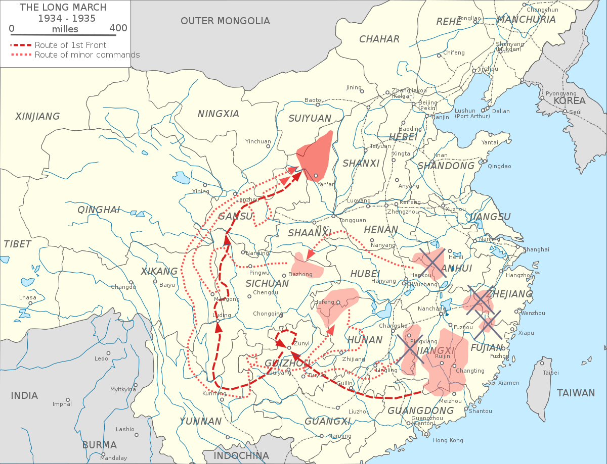

Birth
In 1893, Mao ZeDong, also known as Mao Tse Tung, was born in Shaoshan, HuNan, China, to a Chinese peasant farmer (Mao YiChang).
Early years
From 1901 to 1906, Mao studied at Shaoshan Primary School. The school emphasized following Confucian morals. The Confucian morals suggest that for one to become a "good person", they will need to follow/have the qualities of the five constant virtues (五常): benevolence (仁), righteousness (义), propriety (礼), wisdom (智), and fidelity (信). Classical texts like the Three Character Classic (三字经), the Book of Names(百家姓), and the Thousand Character Classic (千字文) were read at the primary school. Because Mao grew up in an environment that prioritized Confucianism (Ruism), Mao's thoughts were later shaped based on his new ideas as opposed to Confucious morals. In 1906, Mao completed his education and helped his father on the farms. In 1910, Mao was admitted to the Hunan Xiangxiang County Dongshan (东山) Higher Primary School to study.
In 1911, Mao enrolled in the military for the Nationalists as a means of supporting and fighting in the
XinHai Revolution of 1911. The XinHai Revolution was a successful overthrow of the Qing Dynasty. In spring of 1913, Mao enrolled in the provincial Hunan Normal University’s preparatory course to study and continue education. In the Autumn of 1914, Mao was incorporated into the eighth undergraduate class of Hunan First Normal University and started to look up to
Chen DuXiu (陈独秀, cofounder of the CCP) and Hu Shi (胡适, a contributor to Chinese literacy by advocating for written vernacular Chinese).
In June of 1918, Mao graduated from Hunan First Normal School (First Provincial Normal School) in Changsha, and went to Peking University, BeiJing, to be a library assistant for Li DaZhao, who later is one of the co-founders (with Chen DuXiu) of the CCP. On May 4th, 1919, a political movement to change China, known as the May Fourth Movement, occurred with a major protest. Later in 1939, Mao referred to this movement as "a new stage in China's bourgeois-democratic revolution against imperialism and feudalism." On 1919, October 5th, Mao's mother, Wen QiMei, passed away. He wrote "祭母文" as means to grieve for her passing. During May and June of 1920, Mao met Chen DuXiu in Shanghai and discussed the texts and literature of Marxism. After hearing of the successful Russian Revolution which ended in June of 1923, Mao was inspired. Throughout his future years, Mao started to believe in Marxism and furthered away from the idea of nationalism. Mao believed that the farming peasants were the core of a nation.
Gaining leadership
In 1934, Mao went on a long journey with his Red Army to northwest china as a retreat from Jiang JieShi. The journey, from RuiJin, JiangXi, was a form of withdrawal from the Nationalists during the Chinese Civil War.  This long journey, known as the Long March, gave Mao unofficial leadership that would later help stabilize his position as chairman. In later years, the Long March was used to represent the pride and heroism of the Chinese Communist Party. Many groups of Red Armies participated in the march; one of the main forces was the First Front Army of the Chinese Workers' and Peasants' Red Army (Zhong Yang Hong Jun/中央红军). Other forces included the Hong Er Shi Wu Jun, Hong Si Fang Mian Jun, and another group.
At the end of the Long March in Shan Bei (Northern Shanxi), on November 6, 1935, Mao gave his famous impassioned speech:
“我们用双脚用了一年时间走了两万五千里，这是史无前例的壮举，这才是真正的长征。长征是宣言书，长征是宣传队，长征是播种机，长征以我们的胜利敌人的失败而告终。我们红军的人数比以前少了一些，但是留下来的是中国革命的精华，都是经过严峻锻炼与考验的，留下来的同志不仅要以一当十，而且要以一当百、当千。今后，我们要与陕北人民团结在一起，共同完成中国革命的伟大任务." Translation:
"In 1 year, we walked 7767 miles using our feet, this has never been achieved before, and this is a real long march. The long march is a declaration, it's a declaration team, it's a seeder, and the defeat of our enemies marks the farewell of the Long March. Our Red Army population has decreased, but what has survived is the essence of the Chinese revolutions, every one of us was tested by the severe conditions, the comrades that survived will not only take one as ten but will take one as a hundred, like a thousand. From today and on, we will unite with those of Northern Shaanxi, together complete the great task of the Chinese revolution."
The march ended in Bao An, ShanXi with 8,000 survivors out of 100,000 people who joined the march. In 1937, the Sino-Japanese invasion allowed Mao ZeDong to expand the Communists' power in China while the Nationalists (KMT led by Jiang JieShi) fought the Japanese on the coasts of NanJing. The Second United Front was formed in 1937. The CCP helped Jiang with guerilla warfare to defeat the Japanese; Mao and the Communist Party did not directly fight the Japanese. The Chinese Civil War started again when the KMT and CCP were fighting for control in mainland China. In June 1946, the Second United Front was broken. The Land Reform movement was launched in 1948. The land was taken from landlords and redistributed to the lower classes of the society, and landlords who rejected the government were killed. Mao wanted to overthrow the landlord class and abolish feudalism.
Establishing the CCP

After taking power in China, on October 1st, 1949, Mao announced the establishment of the People’s Republic of China in Tiananmen Square, BeiJing.
After Establishment of PRC
Land from wealthier classes and landlords were forcibly taken and redistributed to peasants, or members of the lower class. Many people were sent to the countryside to "reform through labour", where many died from suicide, execution, or abuse. The movement's goal was to “take from the rich and give to the poor”, and establish the ideal Communist society. The total amount of deaths caused by the Landlord Movement after establishment of the PRC is unclear. During this time, in 1950, the CCP sent troops to annex Tibet. In 1950, Mao received a plea from Kim Il-sung to help Korea with the Korean War. Mao ZeDong sent the Chinese People’s Volunteers Force (CPVF) to Korea, commanded by Peng De Huai. In 1950, Mao AnYing, Mao ZeDong’s son with Yang KaiHui, was killed by a United Nations airstrike during the 1950-53 Korean War. AnYing's death may have had a possible connection with
Peng DeHuai 's fall from power after the Great Leap Forward. In 1951, Tibet representatives signed the Seventeen-Point Agreement.
Great Leap Forward
In 1958, the infamous Great Leap Forward (Second Five Year Plan, goal was to increase agricultural production) started. Privately owned organizations and farms were abolished. Due to economic and agricultural crisis, farmers were left starving to death. Mao holds the greatest responsibility for this man-made famine, but blamed the crisis on his opponents and the contributary factor of bad weather (droughts). However, industrial output did increase in the end of 1962. It is estimated that around 35 million people died as a result of this campaign.
The Cultural Revolution (1966-1976)
In August 1966, Mao launched the infamous
Cultural Revolution (文化大革命) , also known as the Great Proletarian Cultural Revolution. Hong Wei Bing (红卫兵), or Red Guards, were initiated by the government to start this revolution. The Red Guards were largely made of young high school and college students. During the beginning years of the revolution (1966-1968), teachers' houses, temples, and libraries were destroyed. Teachers and buildings of education were targeted in the beginning years of this revolution. Teachers were mistreated and physically abused by students, and schools became centers for activism instead of education. Books and literature that were disliked by the CCP were burned. Traditional artifacts and architecture were destroyed and damaged. The goal of the Cultural Revolution was to ditch old aspects of Chinese culture, and fully establish the government's ideas through the CCP's new aspect of Chinese culture. The criticisms were then pointed towards the government officials of each area. Many young Chinese people were forced to go to farms and ditch education. From 1967 to 1968, the People's Liberation Army (PLA) were ordered to suppress the Red Guards by sending them to farms in the countryside to be "educated". Many Red Guards and other protestors were shot when they refused. Mao had used the inexperienced and naive minds of the youth (Red Guards) to enforce the revolution. By indirectly using the minds of the youth, Mao could use the youth to "suppress" the teachers and destroy buildings of teachings. In 1971, a plan to assassinate Mao ZeDong,
Project 571 was planned. On 13 September 1971, Lin Biao died after the plot of Project 571 was discovered. The plan failed but played a role in the Revolution. The Cultural Revolution officially ended when Mao passed away in 1976 from a heart attack in BeiJing. The true reason for Mao's launching of the Cultural Revolution is unclear. Some say that Liu ShaoQi, Vice Chairman from 1956 to 1966, posed a threat to Mao's diminishing power in the CCP. However, Mao's power was never weak. Indeed, Mao's power was slightly affected after the Great Leap Forward, but it wasn’t affected a lot.
Impact
Throughout and after Mao ZeDong's 83 years of life, Mao’s thoughts are not forgotten by the newer Chinese generations. Mao's time in office, from 1949 to 1976, was later known as the Mao era. During and after this era, Mao received a lot of hatred for events he had launched; two of these that caused the most backlash by later generations are the Great Leap Forward and the Cultural Revolution. Even so, despite the infame caused by several launched campaigns, these events show later generations the government’s dedication and efforts spent in the wrong spots. Mao’s achievements have ultimately brought China from a feudalism society (封建社会) to a developing country in later years.
Mao married Luo YiXiu in 1907 until she died in 1910. Mao then married Yang KaiHui (杨开慧) in 1920-1230. Mao Anlong (毛岸龙) was born in 1927 and died in 1931, in Shanghai, China. Anlong was left orphaned and died at a very young age when Mao later married He ZiZhen. On October 24, 1922, Yang KaiHui gave birth to Mao AnYing. Mao AnYing was killed in the Korean War by an air strike. Yang KaiHui was executed by the Nationalists in ChangSha on November 14, 1930. Mao then married He ZiZhen for 7 years until her death. Mao AnHong, Mao's second son with his wife Yang KaiHui, was born in 1932. On November 20, 1938, Mao married Jiang Qing (江青). Jiang Qing was known for being the leader of the Gang of Four (四人帮) during the Mao era. It remains unclear whether major decisions were made by Mao Zedong or by the Gang of Four. Diagnosed with throat cancer in prison, Jiang Qing committed suicide on May 14, 1991.
In his free time, Mao liked to write classical poetry. Several of his famous poems were Chang Sha (长沙，1925), The Long March (长征，1935), and BuSuanZi YongMei (卜算子 咏梅， 1963).
The CCP has been infamous for its propaganda. During the "Mao era", the CCP used music and posters to move the Chinese citizens. The propaganda was effective.
Such public announcements (posters and songs) publicize statements like "Long live the mighty, glorious, and the right CCP!" and "Chairman Mao is the red sun of our hearts".
"Serve the People" was the CCP's slogan that originated in the Mao era. "If we have shortcomings, we are not afraid to have them pointed out and criticized, because we serve the people," Mao stated on September 8, 1944, in his speech titled "Serve the People". "Serve the people", or 为人民服务 in Chinese is still used by future generations of the CCP.
Mao's accent is from the dialects of HuNan (湖南湘潭韶山).
The East is Red, or Dong Fang Hong, a Chinese revolutionary song created to provoke patriotism within China. The song lyrics sing about the history of the CCP under Chairman Mao Zedong from its founding to the establishment of the PRC in 1949. The lyrics portray Mao ZeDong as "China's savior".
The following video records Mao's opening speech at the First National People's Congress of the People's Republic of China (第一届全国人民代表大会) held in 怀仁堂, Beijing. Those who attended the meeting consisted of low-class society members who did not have a high-education leave and did not understand the purpose of the Congress's doings.